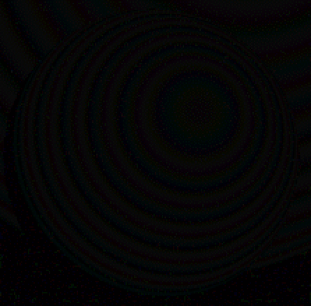

-compose difference diff.png
-define compose:args='0,1,-1,.5' -composite dimg.png
Generate an image showing differences betweeen 2 images
Usefully display differences between similar image pairs:
|
|
|
|
ball.png | ballsp4a.png |
|
magick composite ball.png ballsp4a.png -compose difference diff.png |
magick ball.png ballsp4a.png -compose Mathematics -define compose:args='0,1,-1,.5' -composite dimg.png |
|  | |
| diff.png | dimg.png |
Several image utilities, including
ImageMagick,
offer an image difference generation option,
for which smaller differences are nearer black
and all differences are absolute: red-green == green-red.
However, displayed differences are more visible near middle gray.
ImageMagick also has a
User Defined Mathematical Compose Method that supports this more apparant visual differencing.
Differences would ideally be calculated in a more nearly perceptual color space,
e.g. CIELab.
- 16 Aug 2022